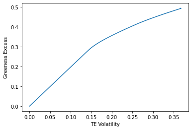

A Simple End to End Framework
Contents
A Simple End to End Framework#
In order to explore how Natural Language Processing can help in addressing climate investing issues, we propose a simple end to end framework, starting with an algorithm adapted from Sautner et al. (2020) [SvLVZ20] to construct firm-level exposure to a climate theme (later exposure to green activities and exposure to climate risks) and follow Roncalli’s approach (2023) [Ron23] for the benchmark tilting.
Firm-Level Exposure to a Climate Theme with NLP#
Climate Tilting#
In what follows we present our simple framework for tilting a benchmark according to a dual objective: (i) minimizing the tracking error volatility risk and (ii) improving the greeness of the tilted version compared to the benchmark. To do so, we follow the approach from Roncalli (2023) [Ron23], formulating our tilting problem as a portfolio optimization with the presence of a benchmark.
Benchmark Greeness#
We need first to define the benchmark greeness. Let’s assume \(b\) the vector of weights of a benchmark which is equally-weighted:
Let’s assume \(G\) a vector of greeness measure of the stocks composing the benchmark:
The benchmark greeness can be computed as:
Below we import the numpy package in order to compute the benchmark greeness.
import numpy as np
b = np.array([0.2, 0.2, 0.2, 0.2, 0.2])
G = np.array([0.95,0.08,0.67,0.12,0.47])
np.dot(b, G)
According to the illustrative data we use, the benchmark greeness is:
0.4580000000000001
Tracking Error Volatility and Excess Greeness#
Having the previous benchmark, let’s assume a portfolio with the same issuers than the benchmark, but with different weights \(x\):
Let’s have the following covariance matrix:
We can compare the relative performance of the portfolio compared to the benchmark with the tracking error volatility:
Below we compute the tracking error volatility:
x = np.array([0.1, 0.15, 0.30, 0.20, 0.25])
Sigma = np.array([[ 0.1536, 0.006, 0.0108, 0.0156, 0.024],
[0.006, 0.17, 0.018, 0.026, 0.04],
[0.0108, 0.018, 0.1324, 0.0468, 0.072],
[0.0156, 0.026, 0.0468, 0.1776, 0.104],
[0.024, 0.04, 0.072, 0.104, 0.28]])
te = np.sqrt((x - b).T @ Sigma @ (x - b))
And the result is:
0.06268173577685926
We also need to define the excess greeness of our portfolio, that is the positive or negative deviation from our benchmark greeness:
Below is the code to compute the excess greeness of our portfolio:
excess_greeness = (x - b).T @ G
And the result is:
-0.008500000000000021
Climate Investing Objectives#
In the previous example, we compared the climate performance of a portfolio against a benchmark, with predefined portfolio’s weights.
However, the objective of investors is to improve the portfolio’s greeness while controlling the tracking error volatility.
Denoting \(\gamma\) as the risk tolerance parameter, we have the following optimization problem:
Where the constraints simply mean that the sum of the resulting weights \(x\) need to be 1 and that individual weights \(x_i\) need to between 0 and 1.
Varying the parameter value of \(\gamma\) gives you the efficient frontier of tracking a benchmark with a greeness objective.
Below we install and import the qpsolvers package and formulate the QP problem of the optimization:
!pip install qpsolvers
from qpsolvers import solve_qp
def portfolio_tilting(Sigma, G, b, gamma):
"""QP formulation"""
P = Sigma # Q
q = - (gamma * G + Sigma @ b) # R, minus because we want to maximize it!
A = np.ones(len(G)).T # A
b = np.array([1.]) # B
lb = np.zeros(len(G))
ub = np.ones(len(G))
print(q)
x = solve_qp(P = P,
q = q,
A = A,
b = b,
lb = lb,
ub = ub,
solver = 'osqp')
return x
Below is the code to draw the efficient frontier, varying \(\gamma\) value:
results_excess_greeness = []
results_te = []
from numpy import arange
list_gammas = arange(0,1.2, 0.01)
for gamma in list_gammas:
x = portfolio_tilting(Sigma = Sigma,
G = G,
b = b,
gamma = gamma)
excess_greeness, te = get_perf_tilting(x = x,
b = b,
Sigma = Sigma,
G = G)
results_excess_greeness.append(excess_greeness)
results_te.append(te)
import matplotlib.pyplot as plt
plt.plot(results_te, results_excess_greeness)
plt.xlabel("TE Volatility")
plt.ylabel("Greeness Excess")
plt.show()
